Красив, чист тротоар в квартала Анигуа Бери, Сан Себастиян
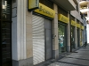
Пощенска служба, в която се влиза от същия прекрасен тротоар
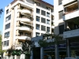
Тези жилищни блокове не са нови, но са поддържани идеално--кв. Антигуа Бери, Сан СебастиянКатолически манастир на върха на хълма Антигуа, пред него жилищни блокове
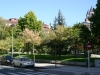
Квартален парк в Антигуа Бери, Сан Себастиян
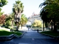
Подредбата и чистотата на парка радват окото
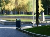
Същият парк, на преден план кофа за отпадъци
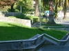
Същият парк в близък план
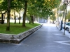
Тротоарът до парка в Антигуа Бери
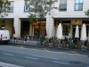
Следобедно кафене -- веригата Ла Тахона продава хляб и сладкарски изделия; улицата е идеално разчертана
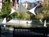
Скулпутура край езерото в парка
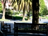
Под палмите чисти лакирани пейки
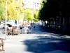
Пешеходна алея от другата страна на парка
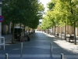
Пешеходна алея, водеща към площад с кафенета; в неделя площадът беше пълен с деца, а кафенетата с млади хора
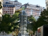
Жилищни блокове, построени върху хълм: на преден план уличен асансьор, зад него в жълто-зелено втори асансяор за следващото ниво
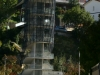
Контейнери за (от ляво надясно) пластмаса, хартия, стъкло (в средата) и два за отпадъци, които се хвърлят в тях само в пластмасови торбички. Обслужват цял жилищен блок. Маркировката на еднопосочната улица показва, че алеята е и за колоездачи.
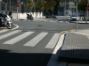
Улична маркировка
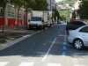
Местата за паркиране са "изрязани" от тротоара, улицата е еднопосочна, а по тротоарите НИКОГА не паркират коли.
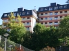
Красиви жилищни блокове поснтроени върху самата скала